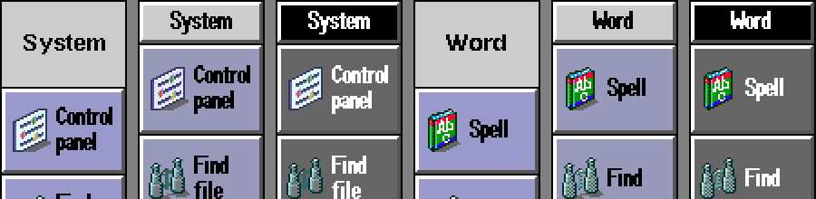
A name box that fits
The program's name at the top of the toolbar is shorter, raised like the buttons, and in the theme's own colours.
Coda for the Psion netBook
The netBook shipped in 1999 with software that was never quite done. Coda is a new edition of its operating system, by Dan Edge. Same machine. Finished.

Every picture on this page is a real screenshot, straight from the screen.
The story
The netBook is a clamshell with a 640 by 480 colour screen, a 190 MHz StrongARM and a CompactFlash slot. Its software, EPOC, was written for the Series 5: half the height and 16 greys. A lot of it came across as it was.
You notice. Programs draw a half height layout in the middle of the screen. Icons are grey or dithered. Time's map is bright green on navy. The clock is yellow. None of it stops the machine working. Together it feels half done.
Coda goes through it all, one piece at a time, and adds what a netBook should have had.
Look and themes
Pick a theme in the Control panel and watch a preview before you commit. The toolbar, the Documents bar, the wallpaper and both clocks follow along. Every colour comes from the screen's steady palette, so nothing shimmers.
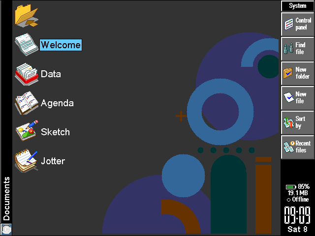
CodaDark

The program's name at the top of the toolbar is shorter, raised like the buttons, and in the theme's own colours.

The strip down the left of the System screen is painted in the theme. It used to stay navy whatever you chose.

Psion asked for button colours the palette didn't have. Coda tunes the screen so Classic shows the blue greys Psion meant.
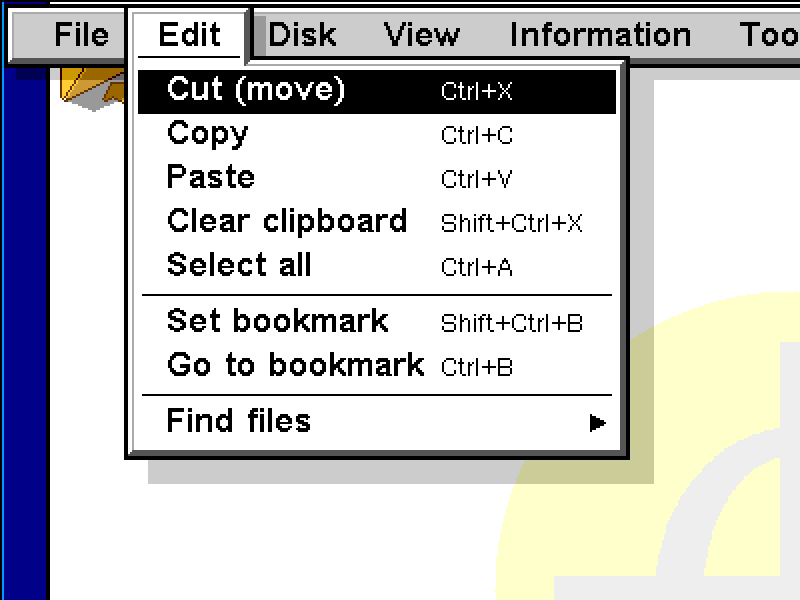
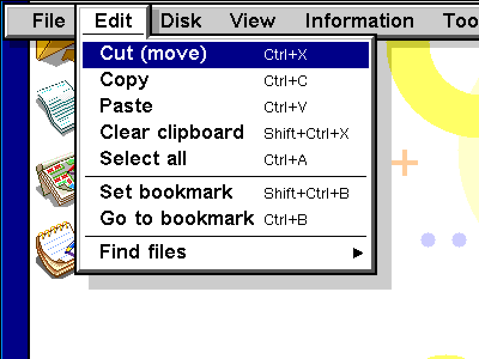
PsionCoda
 BeforeCoda
BeforeCoda
Wallpapers
Five new wallpapers: Coda, Coda psi, Coda hills, Coda sweep and Coda shapes. Each is big flat shapes in the theme's own colours, kept clear of your files, and repainted the moment you change theme. Psion's logo is still there as Psion EPOC, on a ground that matches.
Chosen the usual way, in the System screen's Preferences.


The toolbar
Battery percentage, free memory and a brightness control, on every program's toolbar. Tap the cells or drag along them to set the backlight. Hide any line you don't want in the Control panel.

Psion's toolbar clock was bright yellow, with a name printed on it nobody could make out. Both faces are redrawn with solid greys, a lit bezel and hour marks that sit on whole pixels. Coda gives it a pale cream face. Classic keeps the yellow. Tap it for digital, now in the theme's colours too.
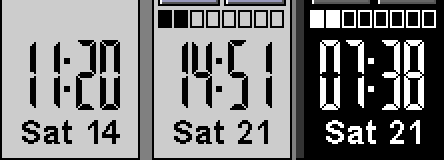

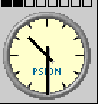
PsionCoda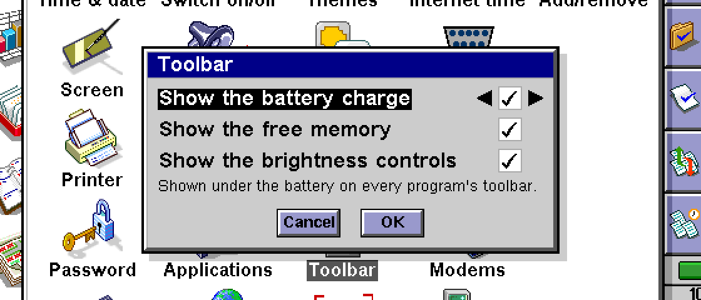
PsiHub
A launcher over whatever you're doing. Open programs come first, most recent at the top, so Ctrl+Menu then Enter flips you back. Start typing and it searches programs, settings, files and commands at once, and learns what you use. It knows other words for things, so wifi finds the network settings, and it forgives a letter typed wrong.

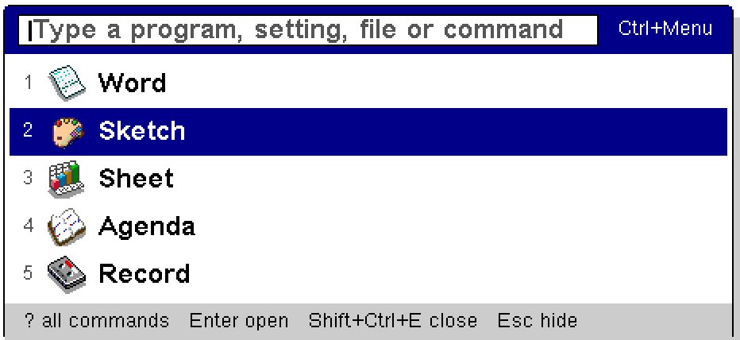
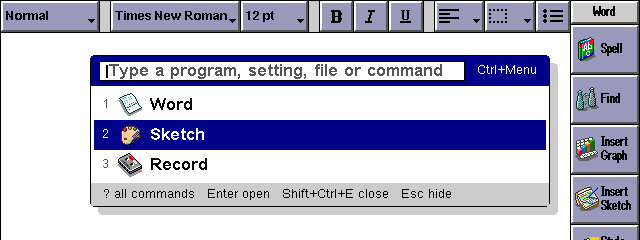
New programs
Not modern apps dropped onto an old machine. Psion's own programs, rebuilt for the netBook's whole screen, with the same menus, keys and files.
Calc drew the Series 5's calculator in the middle of the screen, like it had come through the letterbox. The new Calc is the same calculator laid out again for 640 by 480. The till roll, the memories, the Scientific view, the odd percentage key, even the way it writes numbers. Every key is Calc's own raised keycap, drawn larger with crisp edges.
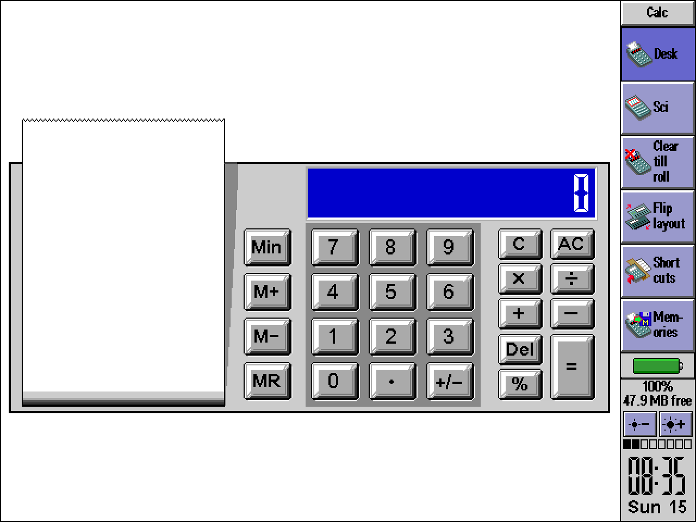
 PsionCoda
PsionCoda
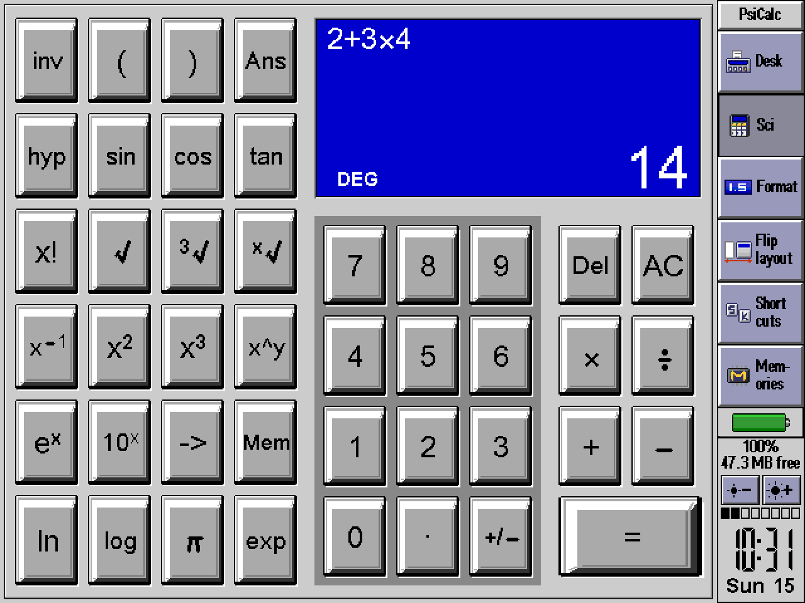
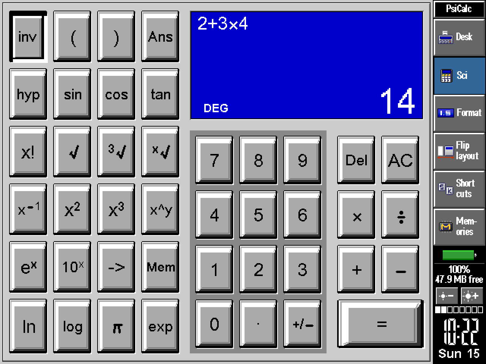
The screen shows 256 colours. Psion's Sketch let you pick 16. The new Sketch opens all of them, laid out like the colour wheel unrolled, with your recent colours, the colour's name and a picker that takes a colour straight off your drawing. The drawing uses the whole screen, zooms to eight times, undoes 16 steps, prints with a preview and exports to PNG. Word's Insert Sketch opens it, copy and paste works with Psion's Sketch, and its files are Sketch files, both ways.

 PsionCoda
PsionCoda
Record told you how far through a recording you were, and nothing else. The new Record draws the sound as a waveform, so you can see the gaps. Select part of it to play, erase or crop to, skip 5 or 30 seconds at a time, find any recording in a list, and bring WAV files in and out. Record's buttons, menus, keys and files are all still there.

A picture viewer for PNG, JPEG, GIF and BMP. Tap a picture on the System screen and it opens, fitted to the screen, ready to zoom, pan and step through the folder. Each photo gets its own 256 colours, picked for that photo.

 Fixed paletteIts own
Fixed paletteIts own
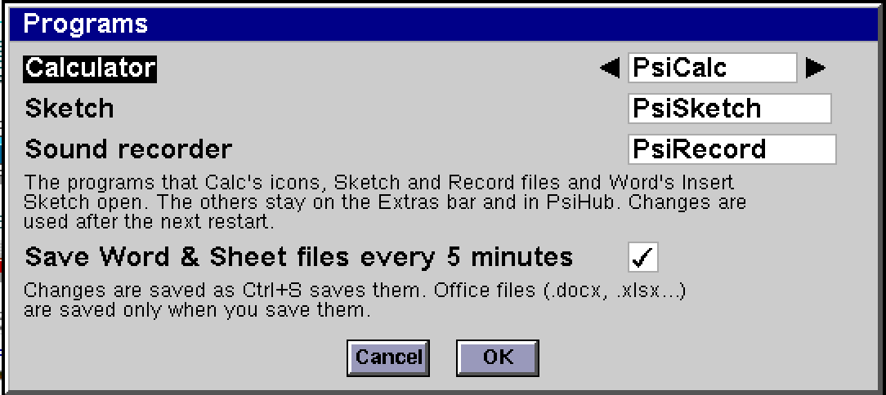
Prefer Psion's originals? Control panel, Programs puts them back on the icons. The other one waits on the Extras bar, as Psion Calc, Psion Sketch or Psion Record.
Office formats
Word and Sheet open and save Microsoft's formats and others on the netBook itself. It's built into the ROM. No PC needed.
Tap a .docx or .xlsx on the System screen and it opens straight in Word or Sheet. The formats are there in Save as, too.


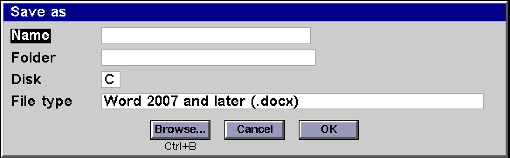
Psion's programs, refreshed
Every built in program was checked for the places where the jump from the Series 5 shows. Pick one and drag.
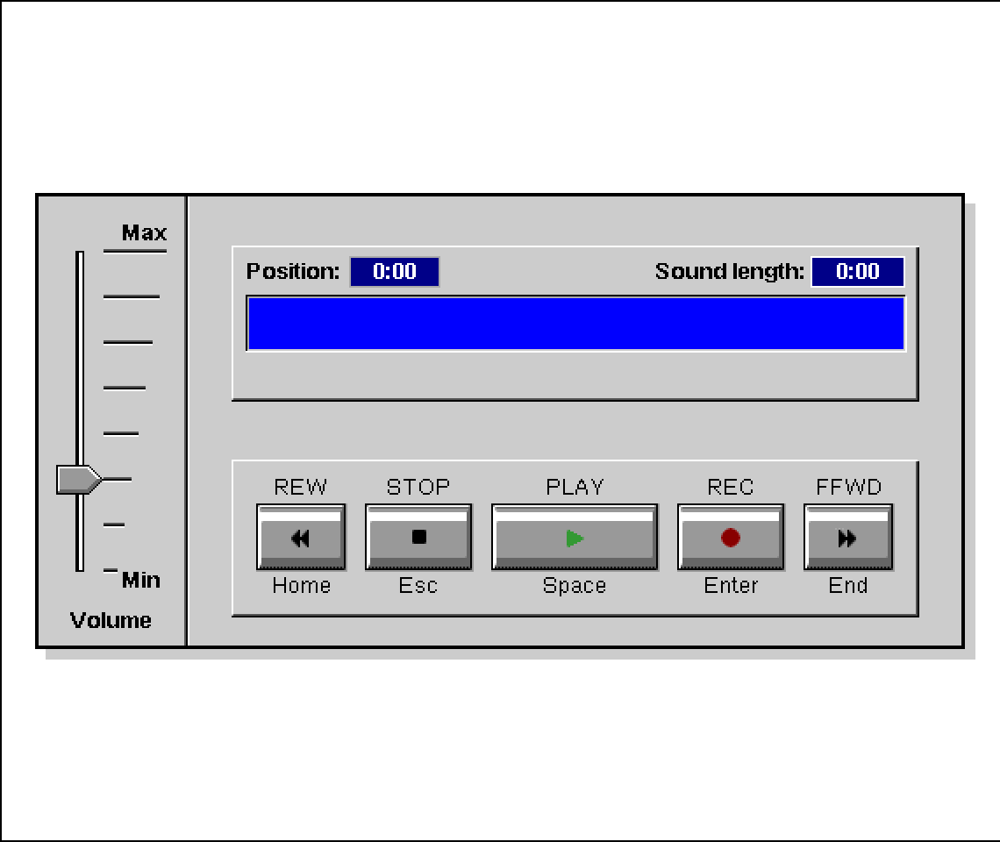
 PsionCoda
PsionCoda
Internet and connectivity
Psion's Email, Opera and Comms terminal couldn't cope with the modern internet. Coda replaces them with programs that can, and the toolbar's Email and web icons open them.

IMAP and SMTP over TLS, with the server's certificate checked. A CalDAV calendar kept in step with Agenda. On the netBook, a preview of each message under the list, in colour.
PsiMail on GitHub
A browser built on Links 2, in colour across the whole screen, with Back, Forward, Reload and the address on a toolband.
PsiWeb on GitHub
SSH with SFTP and tmux support, in place of a dial up terminal and an FTP client that sent passwords in clear.
PsiTerm on GitHub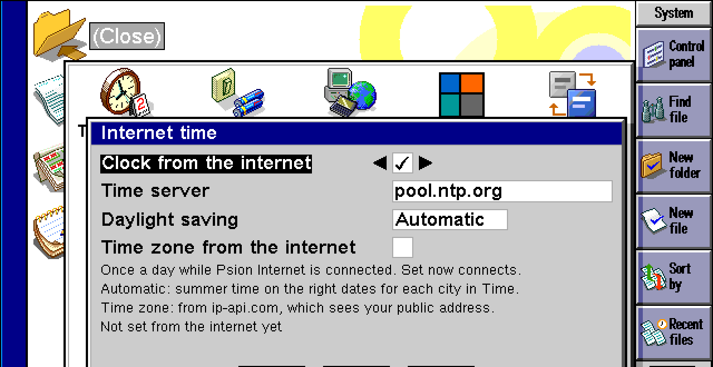
The clock set from a time server once a day, and summer time switched on the right dates for every city in Time. It can find your time zone too, if you ask.

Psion stopped the serial port at 115,200 bps. The chip can do 230,400. Any program that asks for the old top speed gets double, with no changes to the program. On as standard. It's the netBook version of PsiBoost.
The Linux terminal
PsiLinux runs real, unmodified Alpine Linux 3.24 programs on the netBook. It boots with BusyBox init and OpenRC, or goes straight to bash. Alpine's own apk installs Alpine's signed packages, from a catalogue of about 25,000.
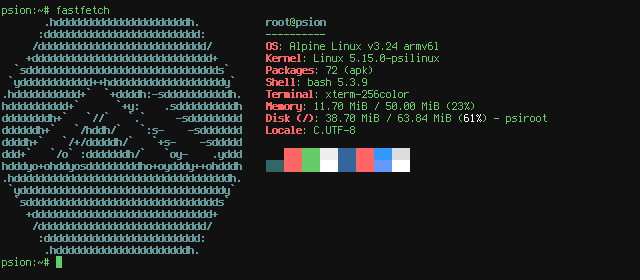
PsiLinux brings its own small kernel layer on top of EPOC, much as WSL1 does on Windows. Linux programs get Linux's system calls, built on the Psion's own files, sockets and memory.
Linux sees the Psion's disks as /c and /d, and the ROM as /z. So git, ssh and editors work directly on your documents.
Type term, linux or shell into PsiHub and press Enter. The terminal is PsiTerm's, in colour on the netBook.
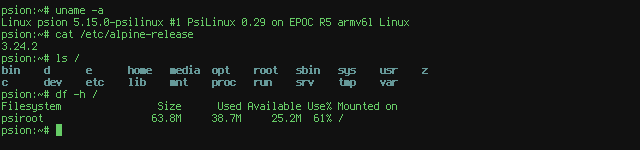
ls / shows the Psion's disks beside Linux's own folders.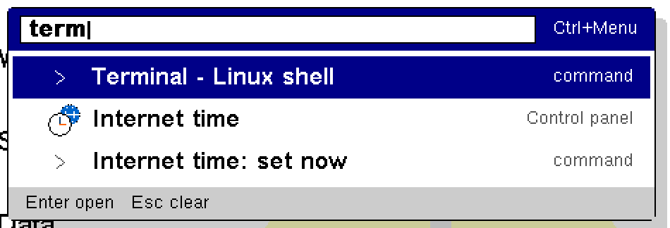
Want more? X with a window manager, Links in graphics mode and Doom are optional installs.
Text and fonts
Control panel, Text offers Psion's own font, Inter, Noto Sans and DejaVu Sans. Each is redrawn at the exact pixel sizes EPOC uses and kept within 4% of Psion's widths, so every menu and dialog still fits. Psion's font can be smoothed, in a few styles.
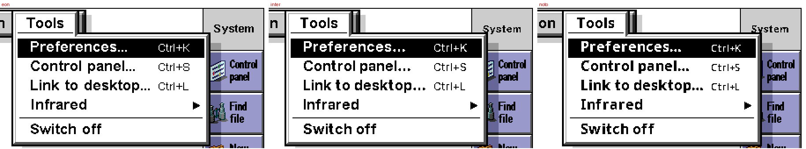

Spelling
Psion's dictionary is from 1995. It had never heard of email, website or broadband. Coda adds about 123,000 British English words, with -ise spellings, beside Psion's own. Word checks against both. Spell uses them for suggestions, anagrams and crossword answers too.

 PsionCoda
PsionCoda

 PsionCoda
PsionCoda
Pictures and icons
The netBook's pictures came over from the Series 5: grey, dithered, sometimes blurry. Coda cleans up 80 of them, redraws the clock faces, and offers new high resolution icons in the Control panel. Psion's stay the default.
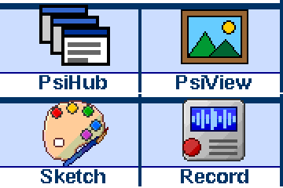
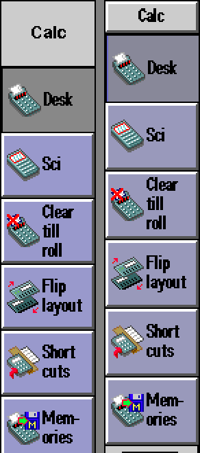

The Control panel
Coda's settings live where Psion's do, grouped by kind: Psion's own, then the network, then the look, then programs.

Start up and memory
On a fresh start, Coda prepares itself in plain view: PC link and key clicks off, Serial speed and Internet time on, the date as 15/11/2026, a 24 hour clock and metric units with miles for long distances, as in the UK.
Behind the scenes, a small program called PsiStart paints the theme, runs the timers and handles a warm restart that keeps your C: disk. Programs Psion started at boot are closed again once they've made their documents, giving back about 1.4 MB of memory.
A short Welcome file waits in Documents, saying what's new and where to find it. And Word and Sheet save your changes every 5 minutes, so a flat battery doesn't take your afternoon with it.
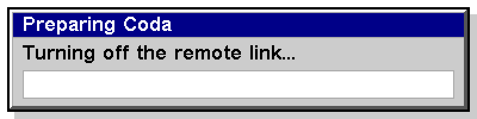
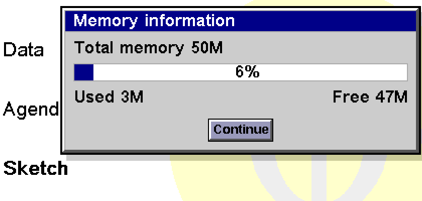

Safety and switching
The netBook has no flash ROM. At every cold start it copies the whole operating system off the card. So Coda is one file on the card, and Psion's own image sits right next to it.
PsiBoot switches between the two. Before a switch it backs up your C: disk, keeping three dated copies, each read back and checked before the oldest is removed. Afterwards it offers to put it back. File, Update the card fetches only the parts of a new image that changed.
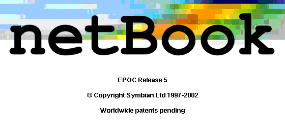
Removed and replaced
| Psion's | Coda's |
|---|---|
| PsiMail | |
| Opera, Web | PsiWeb |
| Comms | PsiTerm |
| nFTP | PsiTerm's SFTP |
| Calc | Calc, with Psion Calc on Extras |
| Sketch | Sketch, with Psion Sketch on Extras |
| Record | Record, with Psion Record on Extras |
| Word's .doc viewer | Word opens .doc itself |
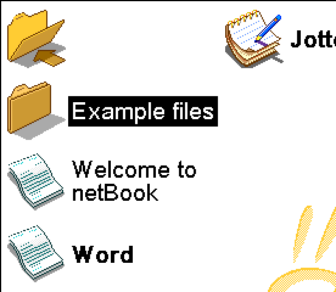
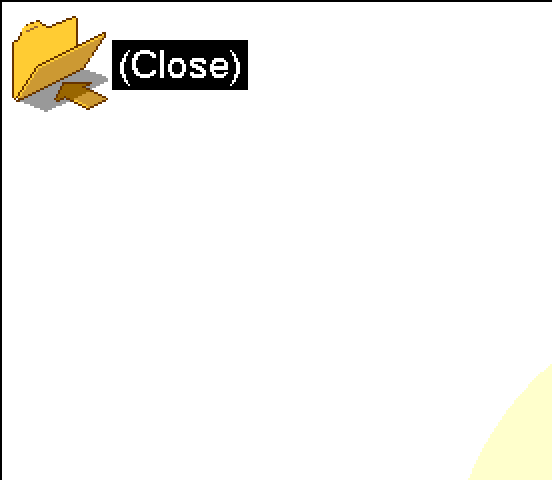
PsionCodaSmall touches